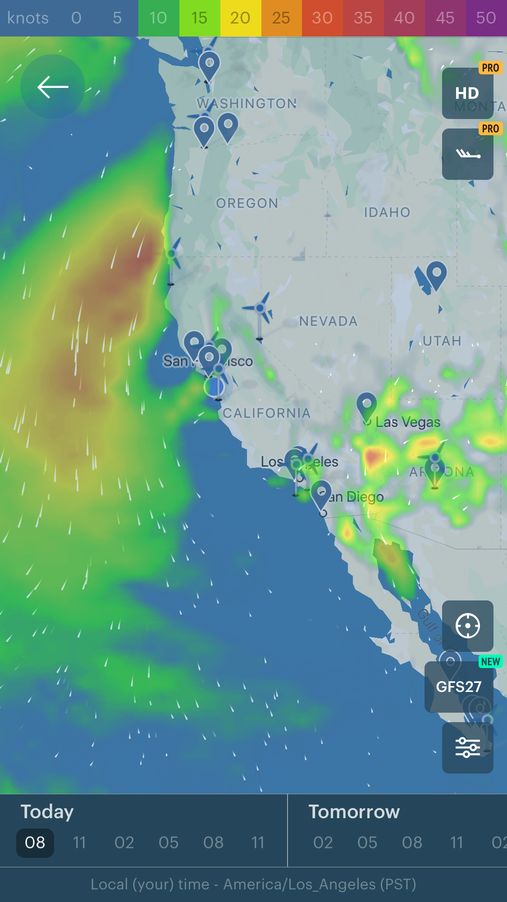
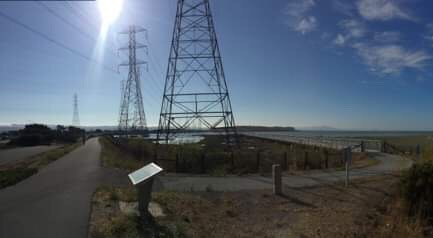
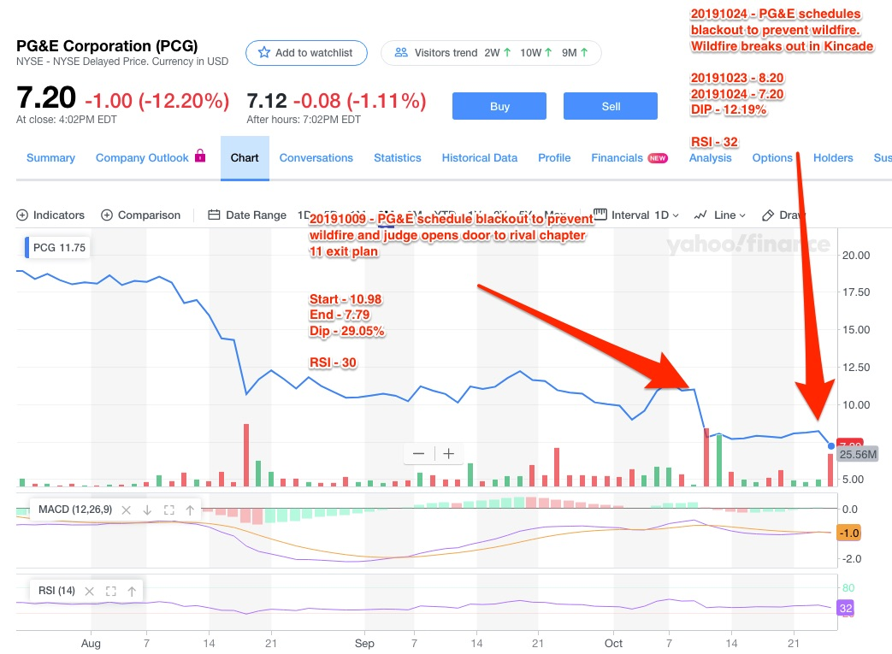
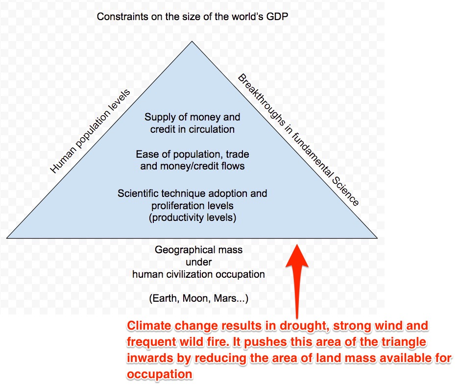

[caption id="attachment_4108" align="alignnone" width="1125"]

View of wind speeds in the area during the public utilities shutdown[/caption][caption id="attachment_4110" align="alignnone" width="433"]

The sizzling power lines[/caption][caption id="attachment_4124" align="alignnone" width="1043"]

Large dips in PCG attributed to scheduled blackouts and negative ruling by judge.[/caption][caption id="attachment_4121" align="alignnone" width="935"]

Climate change reduces land mass under occupation.[/caption]Overview
Wind speeds across inland California has a negative correlation with public utility company share prices.
Our infrastructure is constructed above ground to avoid disruption from earthquakes when they occur. This makes them susceptible to producing sparks when strong winds blow. Combine that with increasingly dry weather conditions caused by climate change and we have the perfect recipe for power disruptions either by fire hazards or controlled shut downs.
Utilities are natural monopolies in their region of operations giving them very inelastic demand curves.
They also happen to be public companies which incentivized them to optimize performance for the short term thereby on a quarterly basis. This thus leaves them disincentivized to invest for the long run (aka infrastructure upgrade) without active government intervention.
The government does actively intervene when circumstances go awry. They need these companies to continue operating least the whole population plunges back to the Stone Age. The previous instance was when the same utilities went bankrupt during the 2003 oil crisis when prices shot into the stratosphere. They ended up on the receiving end of a government bail out.
In a nutshell, the residents are basically setup to bear the brunt of this shit show.
The last time I walked under one of those power lines on a windy day, the sound of those sizzling brought a chill down my spine
Proposed models
- Wildfire (fire)
Wind speed
- Temperature
- Humidity levels
- Vegetation density
- Tornados (air)
- Earthquakes (earth)
- Floods (water)
- Hurricanes (water/air)
- Tsunami (water/earth)
Related references
- [*Loss aversion and reversion to mean strategy resulting from hyper media coverage*, Gary Teh](https://garyteh.com/2018/04/trading-strategy-capitalizing-on-loss-aversion/)
- [*Timing entry into loss aversion positions*, Gary Teh](https://garyteh.com/2019/03/hypothesis-on-timing-entry-position-into-loss-aversion/)
- [*Constraints on world GDP levels and climate change*, Gary Teh](https://garyteh.com/2019/10/constrains-on-world-gdp-levels/)
- *[PG&E elevated electricity customers paid above-market prices for several years to cancel off debt post the 2001 bankruptcy, Wikipedia](https://en.wikipedia.org/wiki/Pacific_Gas_and_Electric_Company)*